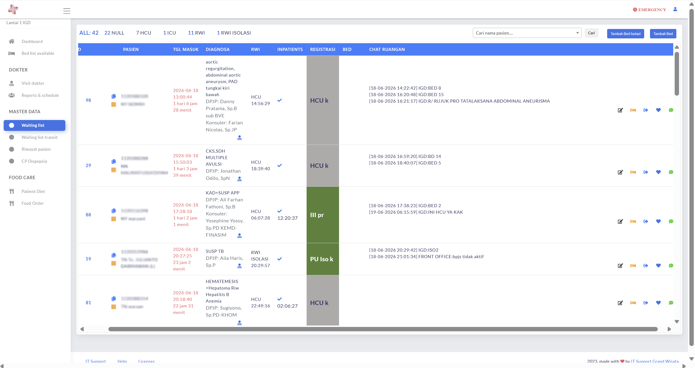
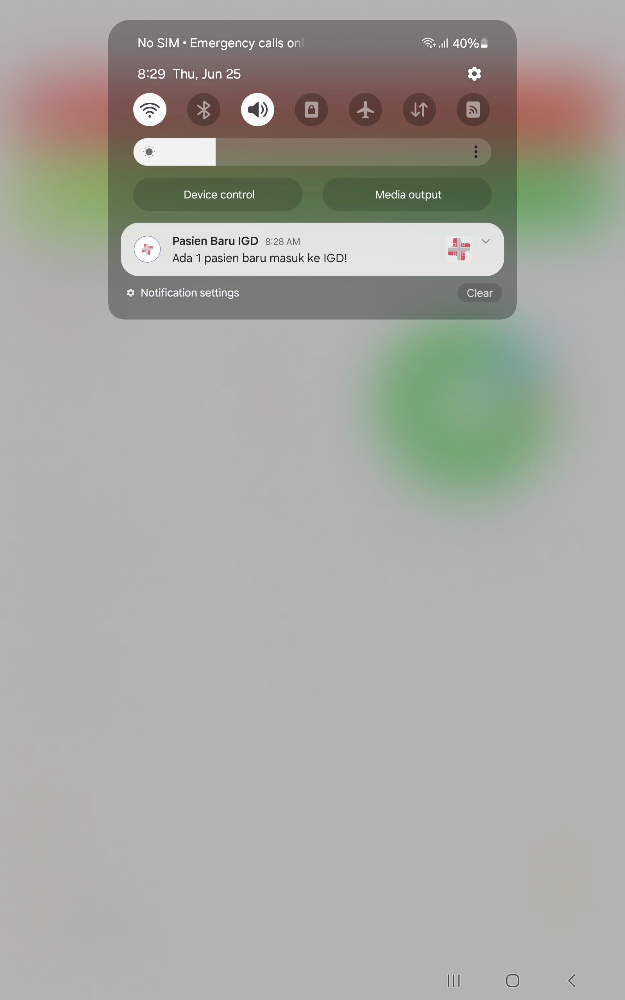

ABSTRAK
Boarding time pasien di Instalasi Gawat Darurat (IGD) masih menjadi tantangan dalam pelayanan rumah sakit akibat keterbatasan informasi ketersediaan tempat tidur dan koordinasi antar unit yang belum terintegrasi. Penelitian ini bertujuan mengembangkan SMART Bed Dashboard sebagai sistem pendukung keputusan berbasis real-time untuk mempercepat penempatan pasien dari IGD ke ruang rawat inap. Metode yang digunakan adalah Prototype melalui tahapan analisis kebutuhan, perancangan, pengembangan, pengujian, dan implementasi sistem. SMART Bed Dashboard mengintegrasikan monitoring tempat tidur, monitoring pasien, komunikasi antar unit, notifikasi otomatis, dashboard analitik, dan Smart Alert System dalam satu platform. Hasil implementasi menunjukkan sistem mampu meningkatkan visibilitas ketersediaan tempat tidur, mempercepat koordinasi pelayanan, mendukung pengambilan keputusan, serta membantu pengendalian boarding time secara real-time.
Kata Kunci: Bed Management, Boarding Time, Dashboard Real-Time, Decision Support System.
LATAR BELAKANG
- Boarding time yang tinggi dapat menyebabkan penumpukan pasien di IGD dan menurunkan efisiensi pelayanan.
- Informasi ketersediaan tempat tidur masih sering diperoleh secara manual sehingga memperlambat proses penempatan pasien.
- Koordinasi antara Admisi, IGD, dan Ruang Rawat Inap belum terintegrasi dalam satu platform.
- Rumah sakit membutuhkan sistem yang mampu menyajikan informasi real-time sekaligus mendukung pengambilan keputusan operasional.
TUJUAN PENELITIAN
Mengembangkan SMART Bed Dashboard sebagai sistem pendukung keputusan berbasis real-time untuk:
- Mempercepat penempatan pasien dari IGD ke ruang rawat inap.
- Meningkatkan koordinasi antar unit pelayanan.
- Mendukung monitoring indikator pelayanan secara terintegrasi.
- Membantu pengurangan boarding time.
METODE PENELITIAN
Metode pengembangan menggunakan Prototype dengan tahapan sebagai berikut:
HASIL PENELITIAN
SMART Bed Dashboard berhasil dikembangkan dan diimplementasikan sebagai platform terintegrasi yang digunakan oleh Admisi, IGD, dan Ruang Rawat Inap. Fitur utama yang tersedia:
- Monitoring bed real-time.
- Monitoring pasien (diagnosa, LOS, dll).
- Aplikasi Android untuk petugas IGD.
- Notifikasi otomatis penempatan pasien.
- Chat koordinasi antar unit.
- Dashboard analitik pelayanan.
- Smart Alert System.
- Notifikasi Kode Biru (experimental).
Sistem mampu menyediakan informasi operasional dan klinis dalam satu dashboard sehingga mempercepat koordinasi dan proses penempatan pasien.
Dampak Kuantitatif
Implementasi sistem menghasilkan penurunan rata-rata LOS IGD pasien eksekutif dari 1 jam 42 menit menjadi 1 jam 27 menit, atau lebih cepat 14,03%.
Tampilan Visual Dashboard
Pratinjau Web & Android
Dashboard Analitik: Monitoring tren pasien dan indikator pelayanan secara real-time.

Monitoring Bed Real-Time: Tampilan daftar tunggu pasien (waiting list) dan status tempat tidur.

Aplikasi Android: Antarmuka mobile untuk memantau informasi ringkas dari mana saja.

Chat Koordinasi: Fitur chat antar unit yang terintegrasi langsung di dalam dashboard.

Notifikasi Otomatis: Contoh notifikasi pada aplikasi Android untuk penempatan pasien baru.
Demo Versi Web: Pratinjau video fungsionalitas utama pada platform web.
Demo Versi Mobile: Pratinjau video penggunaan aplikasi pada perangkat Android.
ANALISIS
SMART Bed Dashboard meningkatkan efisiensi penempatan pasien melalui informasi ketersediaan tempat tidur, koordinasi antar unit, dan notifikasi real-time dalam satu platform terintegrasi. Sistem memungkinkan identifikasi tempat tidur dan pengambilan keputusan dilakukan lebih cepat serta didukung Smart Alert System untuk pemantauan indikator pelayanan secara real-time.
Implementasi sistem berkontribusi pada penurunan rata-rata boarding time sebesar 14 menit 20 detik (14,03%), peningkatan jumlah pasien masuk rawat inap dari IGD sebesar 23,49%, dan peningkatan persentase pasien masuk rawat inap sebesar 53,58%. Hasil ini menunjukkan bahwa integrasi informasi dan koordinasi digital mampu meningkatkan efektivitas bed management, mempercepat alur pelayanan, dan mendukung mutu pelayanan rumah sakit.
INOVASI YANG DIHASILKAN
SMART Bed Dashboard memiliki beberapa keunggulan:
- Sistem berbasis web dan Android.
- Monitoring tempat tidur secara real-time.
- Dashboard visual yang mudah dipahami.
- Integrasi data operasional rumah sakit.
- Mendukung pengambilan keputusan berbasis data.
- Mempercepat proses admission pasien.
- Meningkatkan efektivitas koordinasi antar unit.

KESIMPULAN DAN SARAN
Kesimpulan
SMART Bed Dashboard sebagai sistem pendukung keputusan real-time berbasis web dan Android terbukti meningkatkan efektivitas bed management melalui penyediaan informasi ketersediaan tempat tidur yang cepat, akurat, dan terintegrasi.
Implementasi sistem menghasilkan penurunan rata-rata LOS IGD pasien eksekutif dari 1 jam 42 menit 08 detik menjadi 1 jam 27 menit 48 detik atau lebih cepat 14 menit 20 detik (14,03%). Hasil ini menunjukkan bahwa digitalisasi proses bed management mampu mempercepat alokasi tempat tidur, mengurangi kepadatan di IGD, meningkatkan efisiensi operasional, serta mendukung peningkatan mutu pelayanan rumah sakit.
Saran
- Mengembangkan fitur prediksi ketersediaan tempat tidur berbasis data historis.
- Mengintegrasikan sistem dengan EMR dan HIS rumah sakit.
- Melakukan evaluasi kuantitatif terhadap dampak implementasi terhadap boarding time dan efisiensi pelayanan.
REFERENSI
- Hall R. Patient Flow: Reducing Delay in Healthcare Delivery. Springer; 2013.
- Wager KA, Lee FW, Glaser JP. Health Care Information Systems for a Changing Health Care Environment. Jossey-Bass; 2017.
- Pressman RS, Maxim BR. Software Engineering: A Practitioner's Approach. McGraw-Hill; 2020.
- Sommerville I. Software Engineering. Pearson Education; 2016.
- Kementerian Kesehatan Republik Indonesia. Standar Pelayanan Rumah Sakit.
- World Health Organization. Quality of Care: A Process for Making Strategic Choices in Health Systems. WHO; 2006.